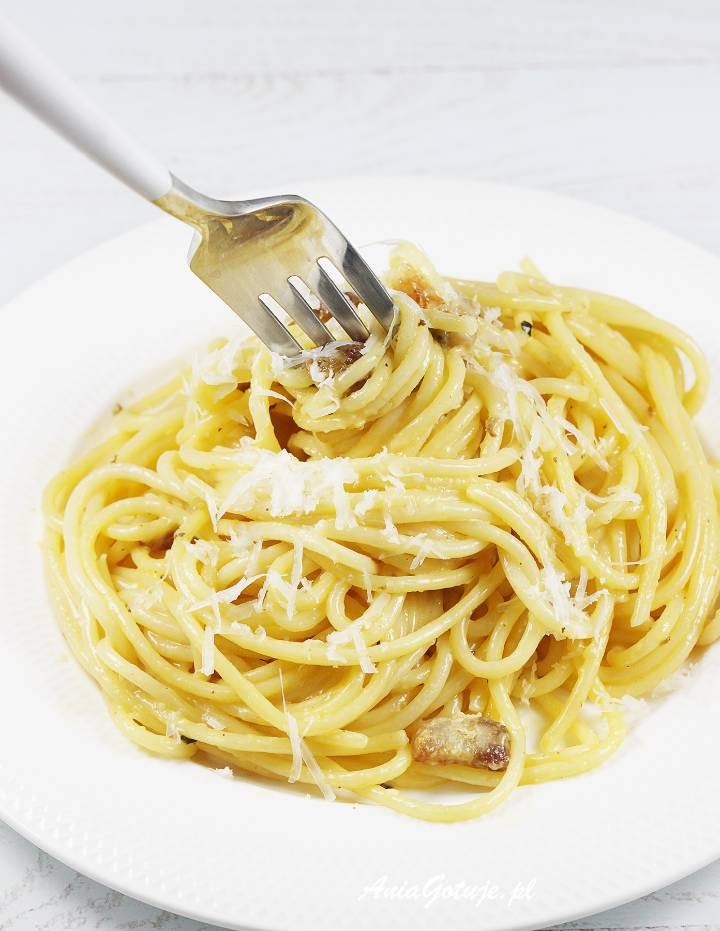

Spaghetti Carbonara

A recipe for a famous Italian dish: Spaghetti Carbonara!
Spaghetti Carbonara is of the most famous Italian dishes. It is well known
for it's low food cost as well a very distinguishing taste. Below you can find
the recipe for it.
Ingridients:
- 1 pound spaghetti,
- 2 tablespoons of olive oil,
- 8 slices of bacon,
- 1 onion,
- 1 clove of garlic
- 4 large eggs,
- 1/2 cup of granted Parmesan cheese,
- salt and black pepper to taste.
Steps:
Bring a large pot of lightly salted water to a boil. Cook spaghetti in boiling water, stirring occasionally, until tender yet firm to the bite, about 12 minutes. Drain, toss spaghetti with 1 tablespoon olive oil, and set aside.
Place diced bacon in a large skillet over medium heat; cook and stir until evenly browned, about 10 minutes. Drain bacon on paper towels, reserving 2 tablespoons bacon fat in the skillet.
Add 1 tablespoon olive oil to bacon fat in the skillet. Add chopped onion and cook over medium heat until onion is translucent. Add minced garlic and cook until fragrant, about 1 minute. Add wine and cook 1 minute more.
Return cooked bacon to the skillet; add cooked spaghetti. Toss to coat and heat through, adding more olive oil if it seems dry or sticks together. Add beaten eggs and cook, tossing constantly with tongs or a large fork, until eggs are barely set. Quickly add 1/2 cup Parmesan cheese and toss again. Season with salt and pepper (remember that bacon and Parmesan are very salty).
Serve warm with chopped parsley sprinkled on top and extra Parmesan cheese at the table.